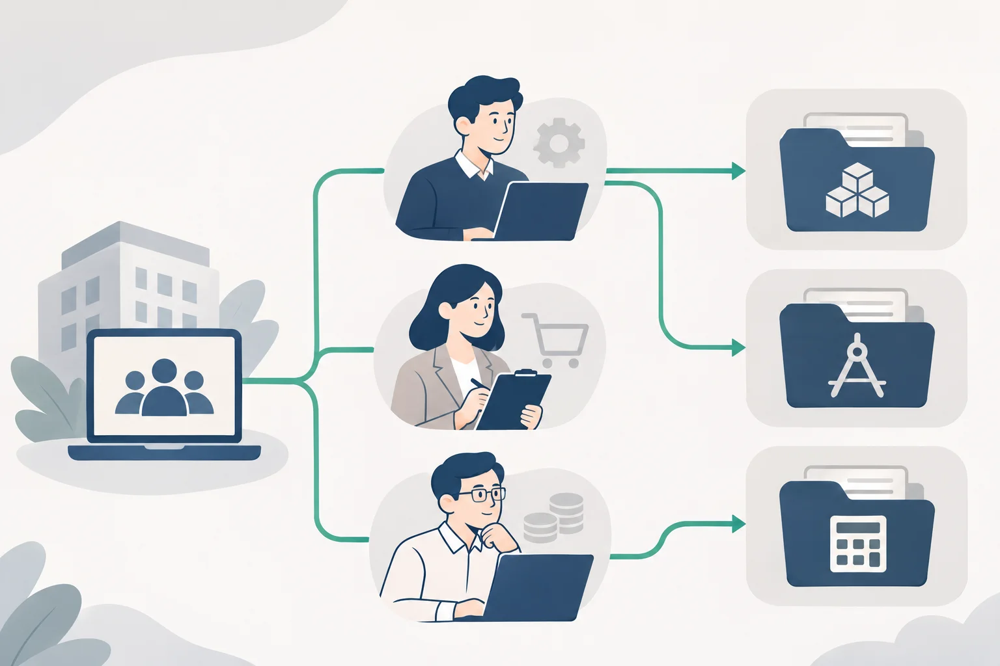

Article · 飞函
Article · 飞函
内网可访问，资料就该全员可见吗？
项目组把方案放进协同平台，方便研发、采购和财务随时查阅。平台部署在企业内网，三方都能登录；但方案中的技术细节、供应商报价和预算审批材料，真的需要向同一范围的人开放吗？
内网决定的是谁能接入平台，资料权限决定的是接入后谁能看、能处理什么。两者如果被当成一回事，常见做法就是把文件放进一个大范围共享空间，再靠文件名或口头提醒区分敏感程度。新成员加入、人员转岗或项目结束时，原有共享范围也容易被忽略。
先按资料用途划分边界
同一个项目不必只有一个资料范围。项目进度和会议安排可以供全体成员查看；技术方案可以开放给参与研发和评审的人；报价与预算材料则应交给承担采购、审批职责的人员。划分时，先问三个问题：谁因工作需要使用这份资料？需要查看还是参与修改？这项需要会持续到什么时候？

这张边界图提醒团队：能登录平台只是起点，具体资料还要经过共享范围的判断。项目群可以负责通知和讨论，文件的实际可见范围则应在存放资料的位置明确设置。这样，讨论需要覆盖更多人时，也不必同步扩大敏感文件的访问范围。
把边界落实到日常共享
飞函的网盘支持共享空间，并可按成员或部门分配共享权限。团队可以据此为项目资料设置不同的共享范围：通用材料面向项目成员，限定材料只向相应成员或部门开放。设置前应核对实际参与人员；当岗位或项目关系变化时，也要复查已有权限，避免沿用过期的共享名单。
落地时可以从一个正在运行的项目开始：列出常用资料，确认各类资料的负责人和使用人，再检查现有共享范围是否与工作需要一致。之后把权限复查放进成员变更和项目收尾流程。内网让协作有了统一入口，清楚的资料边界才能让这个入口服务于各自的工作职责。